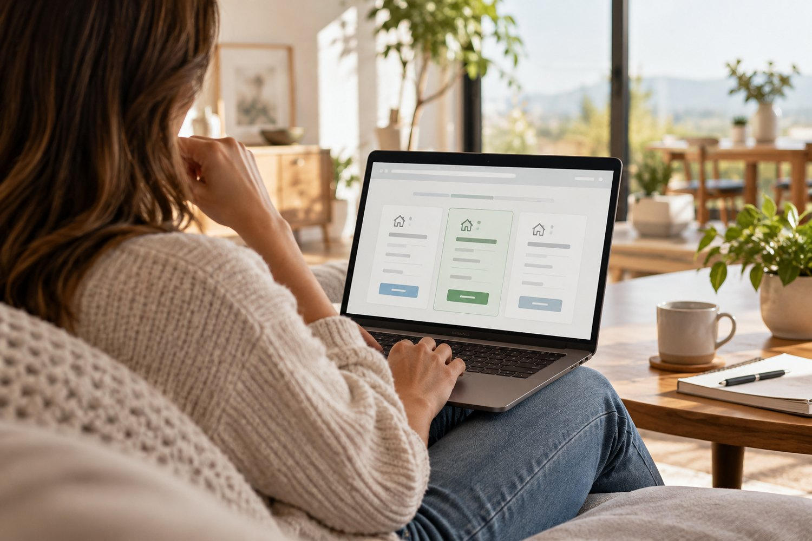

01 /
06DIGITAL MARKETS
Fintech · Trading · Multi-platform
Global crypto & FX exchange
A multi-platform trading initiative designed for regional markets and
professional traders across crypto, foreign exchange and other assets.
Delivery focus
Owned end-to-end delivery from planning and requirements through development, launch
and post-release improvement. Aligned product, engineering, architecture, security,
operations and business stakeholders on scope, milestones and success measures.
Leadership contribution
Set governance and delivery direction, resolved blockers across teams, coordinated
external partners and surfaced schedule, dependency and operational risks early.
Program deliveryTrading
platformsRisk planningCross-functional
leadership
02 /
06REGULATED FINTECH
Digital assets · Platform reliability
Regulated exchange platform
A digital asset platform bringing modern financial services and
blockchain technology together in a regulated environment.
Delivery focus
Managed development and deployment with product, engineering, architecture, security
and operations teams, guiding feature delivery and platform enhancements.
Leadership contribution
Coordinated new technology integrations, iterative delivery and contingency planning
for service disruption, cyber incidents and other operational events.
Platform transformationSecurity &
resilienceRelease quality
03 /
06MERCHANT PAYMENTS
Payments · Merchant services · Integrations
Payment gateway integrations
An integration-based payment service that helps web and mobile
businesses accept digital payments and connect transaction workflows.
Delivery focus
Helped analyze requirements, define service workflows and coordinate the teams needed
to build an integration platform from the ground up.
Leadership contribution
Set up development, testing, infrastructure and DevOps collaboration; established
incident processes and a shared knowledge base for operational teams.
Digital paymentsIntegration
deliveryService operations
04 /
06WALLET OPERATIONS
Payments · Wallet · Product operations
Online wallet services
Wallet services enabling customers to add, withdraw, transfer and spend
money through a digital experience.
Delivery focus
Worked with clients and product teams on requirements, service modules and user
journeys, coordinating development and QA around clear workflows.
Leadership contribution
Built a TechOps and support rhythm for day-to-day operations, improved service
infrastructure and introduced sprint reviews and demos to strengthen feedback.
Digital walletProduct
operationsCustomer experience
05 / 06SERVICE
MANAGEMENT
SaaS · Service management · 10,000+ users
Service platform implementation
A service management implementation supporting more than 10,000 users
with practical incident, knowledge and reporting capabilities.
Delivery focus
Managed technical and functional workstreams through implementation, coordinating
scope, workflow design, testing and client readiness.
Leadership contribution
Created clear team workflows, led client communication and supported implementation
of incident management, knowledge base and reporting modules.
SaaS implementationIncident
managementKnowledge workflows

06 /
06DIGITAL LENDING
Customer experience · Digital lending
Arambh loan discovery
A web-based loan discovery concept designed to help customers compare
loan options and find consultation support.
Delivery focus
Helped turn a customer need into functional requirements and practical workflows,
keeping the experience accessible and straightforward.
Leadership contribution
Coordinated project routines, team status and demos, and supported good development
and testing practices across the delivery cycle.
Digital lendingRequirementsWorkflow design